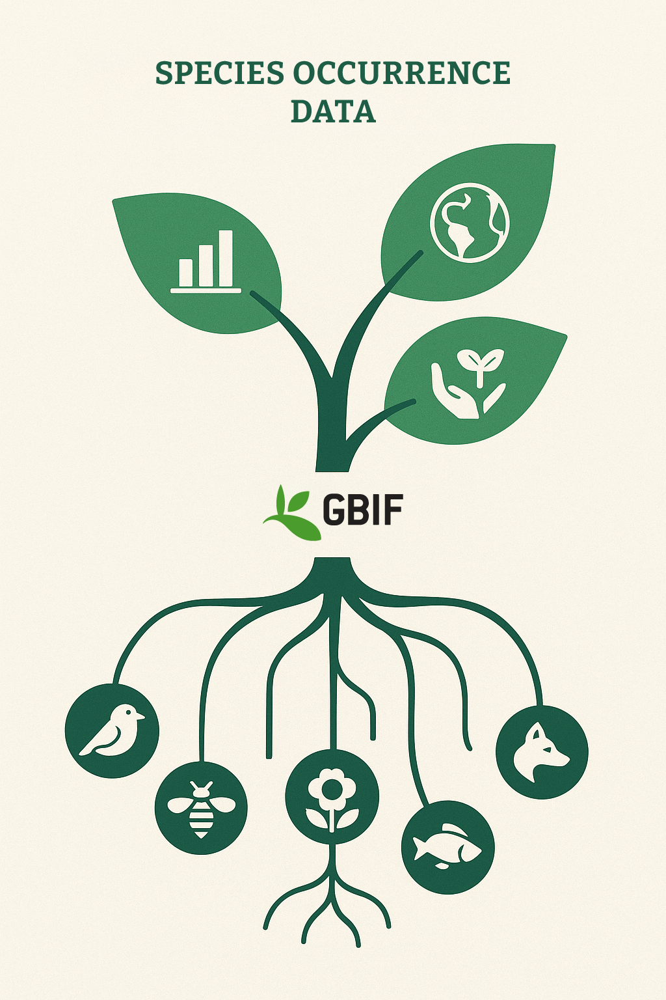

As the business and financial sectors increasingly look towards integrating biodiversity within their sustainability frameworks, this overview outlines the different frameworks that exist, the sectors they belong to, and how the GBIF infrastructure and the data it provides can support these sectors.

It is important to say upfront how GBIF-mediated data fits within the wider biodiversity data landscape in order to prevent confusion on what one can, and cannot, do with the data. GBIF-mediated data provides records of where and when species have been observed or collected from data-holding organizations across the globe.
At a minimum, data will have:
- a species name (Latin binomial),
- a timestamp of when the observation occurred, and
- location information (often latitude–longitude coordinates).
Although not limited to these, other information from the time of collection or observation can also be shared. GBIF is the world’s largest aggregator of such data and is used as the basis for derived information products that support biodiversity disclosures such as ecological niche models and Red Lists.
The reliability of such derived products is directly correlated to the availability of GBIF-mediated data, and GBIF-mediated data can be seen as a complementary data source for ground-truthing these derived products.
Safeguard Frameworks
Multilateral Development Banks (MDBs) employ environmental and social safeguard frameworks for their financed projects—both public and private. Projects must demonstrate how they plan to mitigate environmental and social impacts of their activities.
In the case of biodiversity, MDB standards typically require clients to follow the mitigation hierarchy when implementing projects:
Avoid → Minimise → Restore → Offset.
These standards also compel financiers to fund projects that:
- reduce biodiversity impacts, or
- commit to no net loss in natural habitat or net gain in critical habitat.
Below is a list of some commonly used safeguard frameworks used by MDBs:
| Level | Institution / Framework | Who It Applies To | Scope & Instruments | Safeguard / Framework | Biodiversity Expectations |
|---|---|---|---|---|---|
| Project-level finance (public) | World Bank (IBRD/IDA) | Governments (sovereign borrowers, public projects) | Loans, grants, guarantees | Environmental & Social Framework (ESF) → Financed projects must meet 10 ESS* | ESS6 - Avoid/minimize biodiversity impacts, sustainable natural resource use; use of offsets less prescriptive; relies on national systems |
| Project-level finance (private) | IFC (International Finance Corporation) | Private companies, PPPs, private equity funds, banks | Loans, equity, advisory, syndicated finance | IFC Performance Standards (PSs) → Financed projects must meet 8 PSs (last update, 2012) | PS6 - Strong mitigation hierarchy; no net loss in natural habitats, net gain in critical habitats |
| Regional project-level (public & private)** | EBRD (European Bank for Reconstruction and Development) | Private and public clients in EBRD region (Eastern Europe, Central Asia, Southern and Eastern Mediterranean, Northern Africa, Sub-Saharan Africa) | Loans, equity, bonds, guarantees, syndicated finance | EBRD 10 Environmental and Social Requirements (PRs) → Financed projects must meet 10 ESRs | ESR6 - reviewed in 2024; similar to but more up to date than IFC PS6; plus EU law compliance (Habitats/Birds Directives, Natura 2000); strict on protected areas |
*Environmental and Social Standards
**Other regional major MDB Safeguard Frameworks include:
- ADB (Asian Development Bank): Safeguard Policy Statement (updated 2024)
- AfDB (African Development Bank): Integrated Safeguards System (5 Operational Safeguards)
- IDB (Inter-American Development Bank): Environmental and Social Policy Framework (2021, aligned with IFC PSs)
- IsDB (Islamic Development Bank): Environmental & Social Framework
- EIB (European Investment Bank): Environmental and Social Standards (10 standards, EU-aligned)
In addition, these MDB safeguard frameworks are extended into:
- Commercial banking via the voluntary Equator Principles, which require borrowers to apply IFC Performance Standards (e.g., PS6).
- Export credit agencies of OECD countries through OECD Common Approaches, which encourage benchmarking against IFC/WB standards (though biodiversity safeguards are less prescriptive).
How Financial Institutions Vet Projects
Below is an outline of an idealised evaluation process outlining opportunities for GBIF-mediated data to support financial institutions in making appropriate investment decisions.
| Step | Process | Role of GBIF |
|---|---|---|
| Screening & Categorization | Bank assigns a risk category (A/B/C, or High/Medium/Low) based on environmental & social risk, which determines the level of safeguard requirements. Example: WB: High risk → full ESIA; IFC: Category A → significant biodiversity/habitat risks. |
GBIF-mediated data can provide known presences (and, in some cases, absences) of species, including those of conservation importance (e.g., threatened or invasive species) at the proposed project. |
| Environmental & Social Impact Assessment (ESIA) | The borrower must prepare an ESIA identifying biodiversity, habitat, and ecosystem impacts and proposing mitigation following the mitigation hierarchy. | GBIF-mediated data can help assess the state of nature before the project, providing known species occurrences, including those of conservation importance, to support “no net loss” or “net gain” goals. Baseline data collected should be shared publicly. |
| Safeguard Action Plans | If risks are found, banks require Environmental and Social Management Plans (ESMPs) or Biodiversity Action Plans (BAPs) with mitigation commitments. | GBIF-mediated data can help design biodiversity indicators for monitoring “no net loss” or “net gain” by identifying where and what needs monitoring. Publishing monitoring data via GBIF facilitates compliance checks. |
| Loan/Investment Conditions | Safeguard compliance is written into the loan or investment contract. Failure to comply can lead to suspension or cancellation. | GBIF-mediated data can provide evidence that clients are meeting biodiversity-related loan stipulations. |
| Independent Review & Due Diligence | Independent check of borrower’s studies. | Independent datasets like GBIF reduce reliance on consultant-provided, opaque data. |
| Monitoring & Supervision | Borrowers must report regularly; banks may conduct audits, site visits, or consultations. | Borrowers can share monitoring data through GBIF to facilitate audits and adaptive management. |
| Grievance Mechanisms | Banks (e.g., WB Inspection Panel, IFC’s CAO, EBRD’s IPAM) allow affected communities or NGOs to file complaints. | GBIF can provide a data source for validating claims, especially when project data is shared through it. |
Note: To achieve no net loss in natural habitats and net gains in critical habitats, clients must assess the biodiversity baseline in the area to be affected by the project (EAAA).
That baseline assessment produces invaluable biodiversity data that should be publicly shared.
Environmental, Social and Governance (ESG) Frameworks
MDB safeguard mechanisms ensure biodiversity is considered in project financing. Parallel to these, business ESG frameworks guide corporate sustainability performance.
Disclosure Frameworks
Disclosure frameworks set standards on how companies should report on specific ESG issues.
The Taskforce for Nature-related Financial Disclosure (TNFD) develops the biodiversity component of these frameworks, building on the Taskforce for Climate-related Financial Disclosure (TCFD).
TNFD ensures that biodiversity dependencies and impacts are disclosed in a standardised manner across sectors. While voluntary, ESG disclosures are typically made through:
- Company annual or ESG reports (e.g. Nestlé’s Sustainability Report)
- Voluntary platforms, e.g., Carbon Disclosure Project (CDP), Global Reporting Initiative (GRI)
- Regulatory filings, e.g., under EU’s Corporate Sustainability Reporting Directive (CSRD)
- Best practice requirements, e.g., as required by EBRD in its 2024 Environmental and Social Policy (including the ESR6 Guidance Note) and described in the technical guidance on uploading biodiversity data
Below is an example of regulatory frameworks in different jurisdictions:
| Jurisdiction | Framework / Scope | Status of Disclosures | Who Must Comply | Filing / Regulator |
|---|---|---|---|---|
| UK | TCFD-aligned climate disclosure (mandatory since 2022) | Climate = mandatory; Biodiversity = voluntary (TNFD encouraged) | Premium-listed companies, large private firms, banks, insurers | FCA (Financial Conduct Authority) |
| New Zealand | Climate-Related Disclosures (CRD), TCFD/ISSB-aligned | Climate = mandatory; Biodiversity = not yet mandatory (TNFD next) | Large listed companies, banks, insurers, asset managers | FMA (Financial Markets Authority) |
| Japan | TCFD-aligned disclosure in securities reports (since 2022) | Climate = mandatory; Biodiversity = voluntary (TNFD pilots) | All companies on TSE Prime Market | FSA (Financial Services Agency) |
| EU | Corporate Sustainability Reporting Directive (CSRD) – mandatory ESRS | Climate = mandatory; Biodiversity = mandatory under ESRS E4 | Companies with >1000 employees, >€50M turnover or >€25M balance sheet, EU-listed | National regulators under CSRD |
| USA | SEC Climate Disclosure Rule (adopted 2024) | Climate = mandatory (under challenge); Biodiversity = voluntary | Public companies (registrants) | SEC |
| Brazil | Emerging ESG/nature disclosure rules | Biodiversity-related disclosures expanding (e.g., deforestation risk) | Banks & listed companies | Banco Central, B3 |
| Indonesia | OJK sustainability disclosure rules | Includes biodiversity aspects (forestry, palm oil, extractives) | Large listed & financial institutions | OJK |
| China | Draft ESG/nature disclosure guidelines (2023–2024) | Biodiversity included; expected to be mandatory soon | Listed companies (esp. resource-intensive sectors) | CSRC & Stock Exchanges |
Science-Based Targets and the TNFD
Through the TNFD, companies are encouraged to adopt Science Based Targets for Nature (SBTN) to set measurable, science-based biodiversity goals, e.g.:
- restore X hectares,
- reduce water withdrawal by Y%, or
- eliminate deforestation from supply chains.
SBTN aligns with the Kunming-Montreal Global Biodiversity Framework and complements TNFD by helping companies set internal goals (SBTN) and disclose them externally (TNFD).
How GBIF Supports Business Biodiversity Disclosures
Many of the uses of GBIF listed for safeguards apply equally to corporate disclosures:
Screening
The spatial–temporal nature of GBIF data allows companies to determine known species presences (and, in some cases, absences), including species of conservation importance.
This enables biodiversity baseline assessments across a company’s operations, helping to avoid and minimise biodiversity impacts.
Biodiversity Monitoring
Using data coverage and availability over a company’s footprint, companies can design monitoring systems to measure biodiversity impact over time and track progress towards targets.
Data Access
GBIF provides the infrastructure through which species occurrence data used in company assessments can be shared.
While not all required data will be found in GBIF, additional company-collected data can be published through GBIF, increasing transparency and supporting the broader data ecosystem.
GBIF Recommendations to Improve Biodiversity Disclosure Reporting
It is encouraging that businesses recognise GBIF as a data source and infrastructure for sharing species occurrence data. To strengthen the link between business biodiversity reporting and the GBIF infrastructure, we recommend:
-
Transparency across all biodiversity disclosures
Biodiversity disclosures should be traceable, with sources and data clearly cited. The issuing of DOIs by GBIF provides a mechanism for traceability. -
Companies should acknowledge data gaps and set collection targets
Address taxonomic, spatial, and temporal biases in occurrence data through targeted collection efforts. Companies can help fill data gaps that support robust science and contribute to Target 21 of the Kunming-Montreal Global Biodiversity Framework.
GBIF nodes should build capacity to support company data sharing. -
Adherence to data licensing
Though GBIF data is freely available, downstream users must adhere to GBIF data licences and respect attribution and reuse conditions. -
Capacity building within companies
Strengthen internal capacity to use and interpret GBIF-mediated data and understand its limitations to ensure responsible use in biodiversity reporting. -
Accessible, standardised reports
Biodiversity disclosure reports should be machine-readable (e.g., digital XML/JSON/CSV) and accessible through open repositories (e.g., Zenodo)—as mandated under frameworks like CSRD—to ensure public access to underlying data.